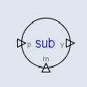
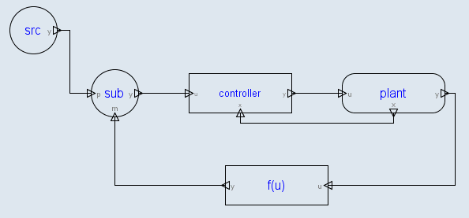

A Subtracter has 2 inputs. One input is called "p" and the other is called the "m". The output is called "y".
Both "p" and "m" must be connected to signals with the same dimension. The dimension of output "y" is the same as that of the inputs.

The output y is calculated as y = p - m.